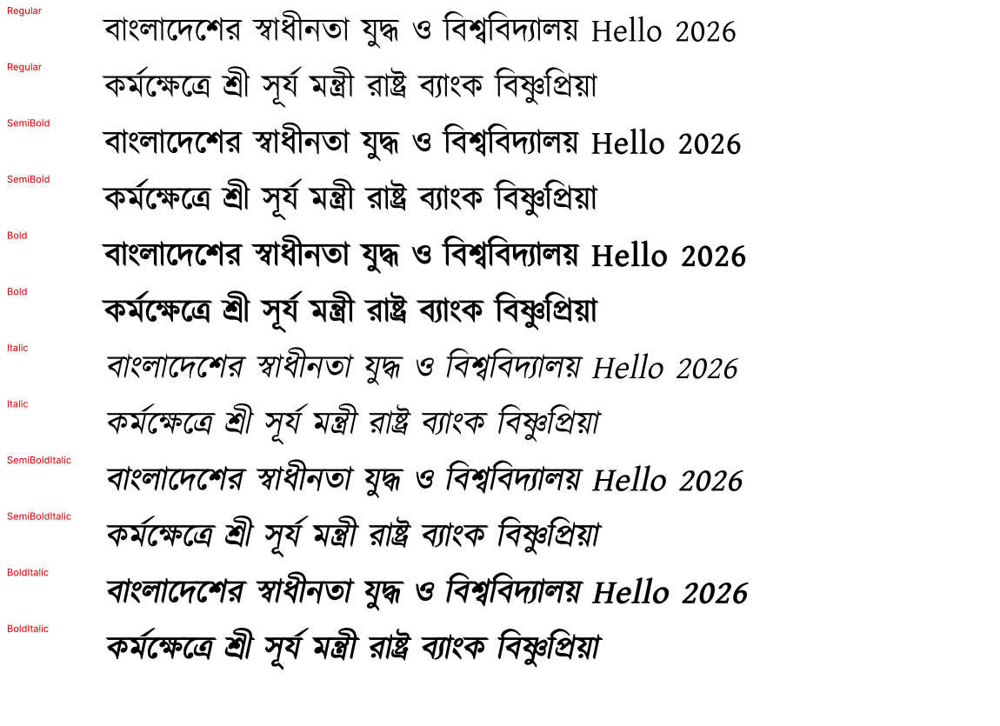

Specimen & documentation →
Open the full specimen — all six styles, conjunct & matra stress tests,
live sandbox, character set, metrics and install guides.
specimen.html
Source repository
Fonts, build script, Jekyll workflow and history on GitHub.
github.com/sisir-sinha/Kalpurush →
At a glance
Styles
Regular · SemiBold · Bold + Italics
Web fonts
woff2 & ttf · CDN ready
Layout tables
GSUB / GPOS kept intact
License
SIL OFL 1.0 · free for commercial use
